“It’s not the destination or the journey that matters most, but the company you keep.”
I am in my 4th year of Engineering Physics and Computing at Queen’s University. My academic interests are in experimental quantum optics, from single-photon sources and cavity QED to strongly interacting photons, along with photonic computing. However, this is only a part of who I am.
I play varsity water polo for Queen’s, and I love being part of this team. I am incredibly grateful for the opportunity to work hard alongside friends who share the same goals. In my free time, I like exploring nature, skiing, reading, and pondering philosophical questions with friends.
Overall, I love exploring, whether it’s in the natural world or intellectual landscapes. However, none of this would be meaningful without the great people I get to share these experiences with. To me, it’s not the destination or the journey that matters most, but the company you keep that makes it all worthwhile.
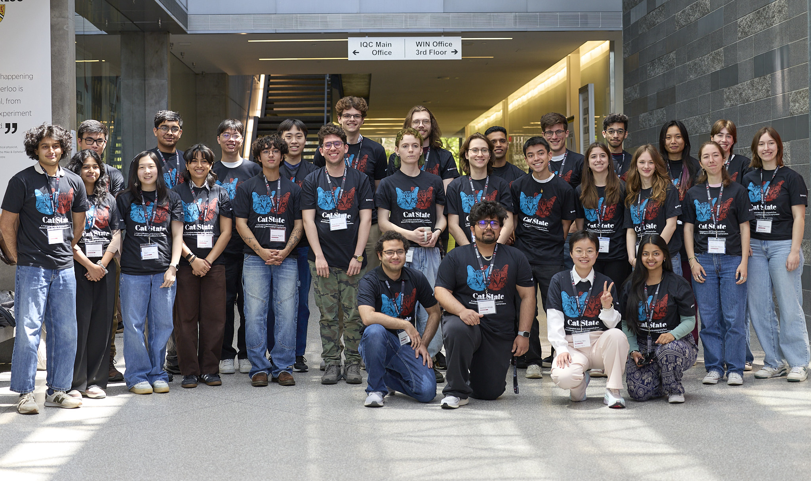
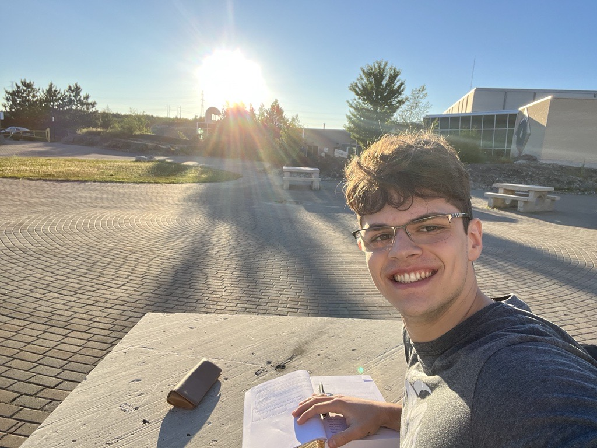
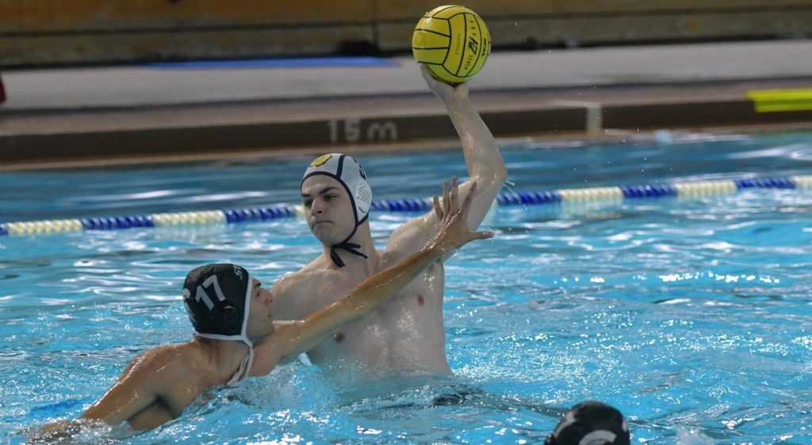
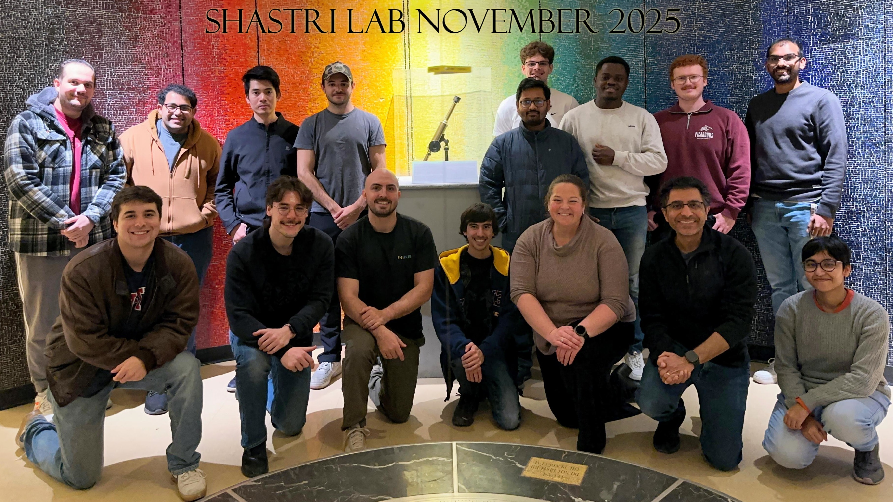
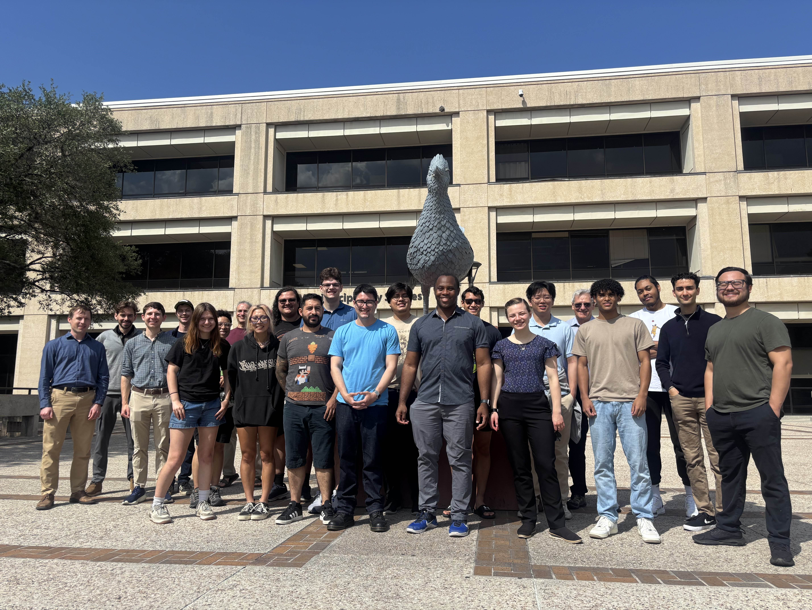
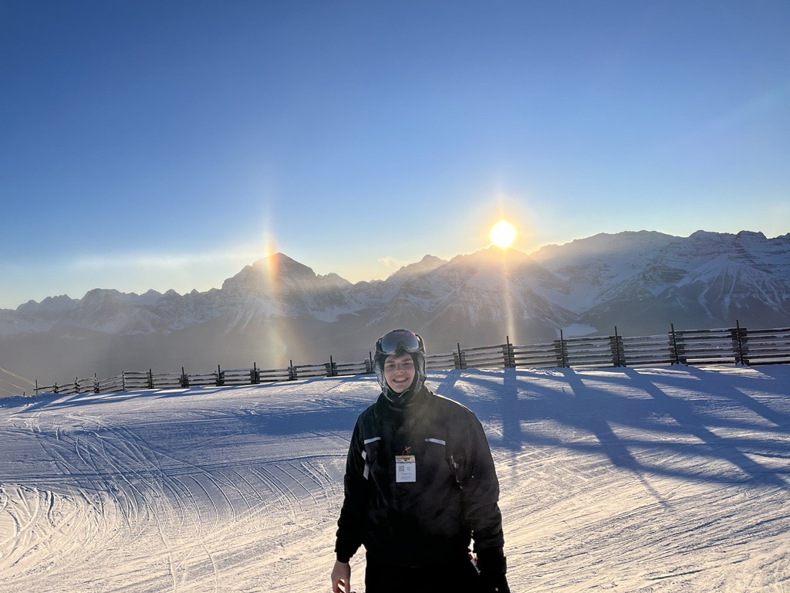
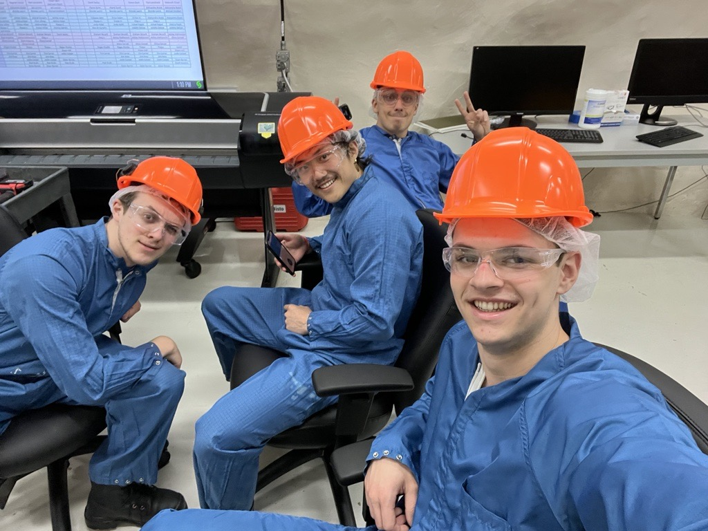
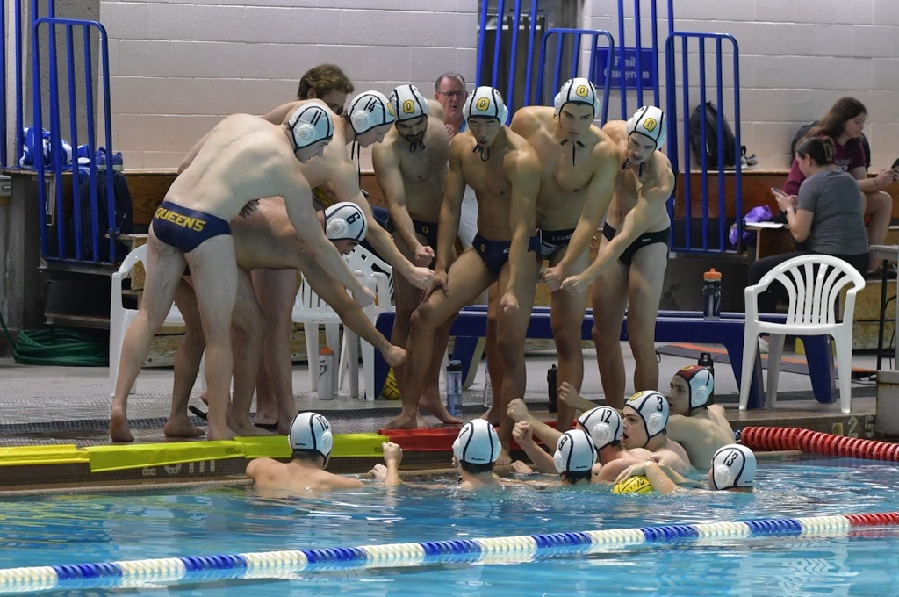
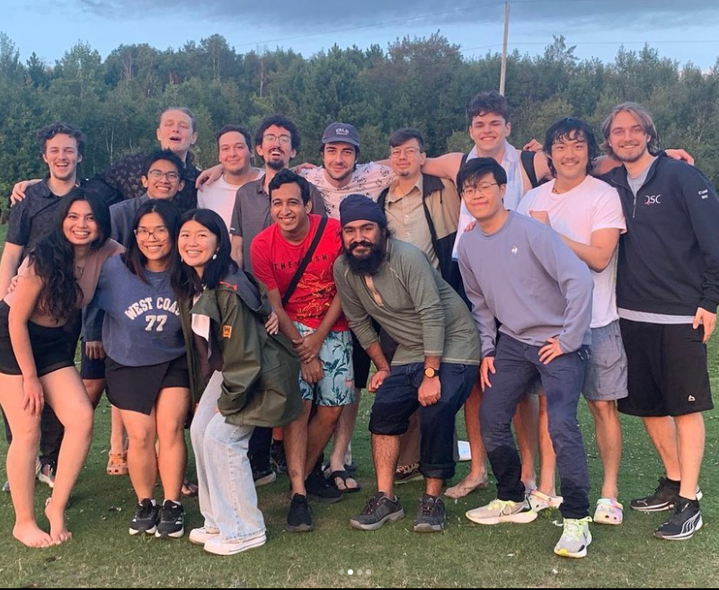
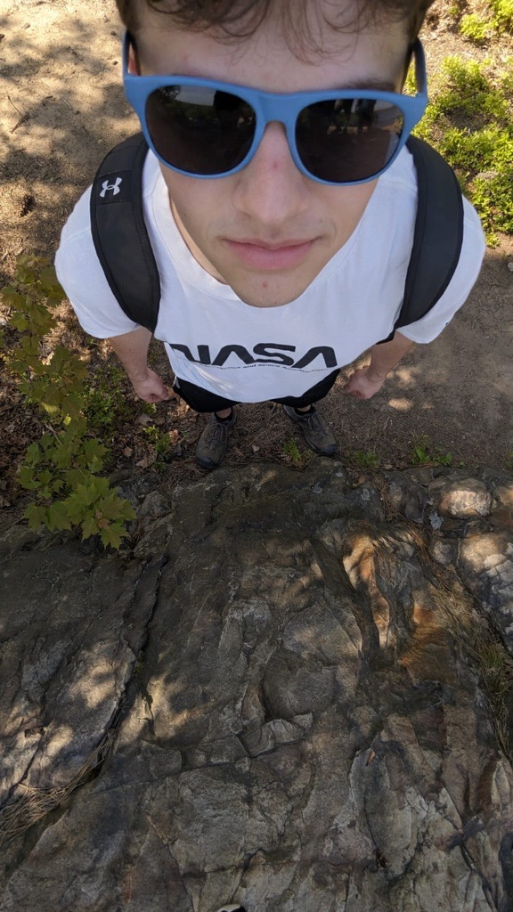
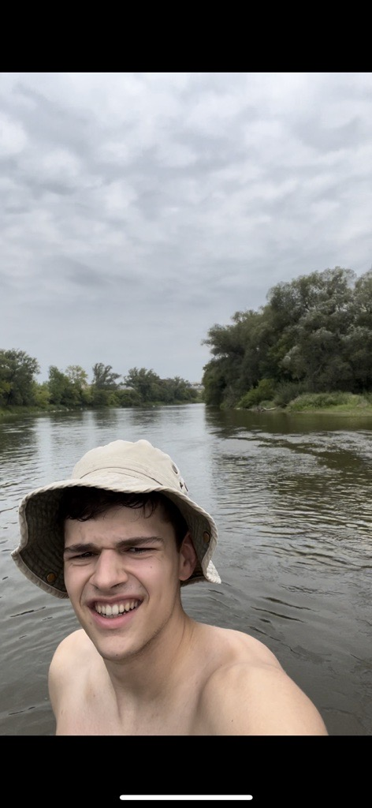
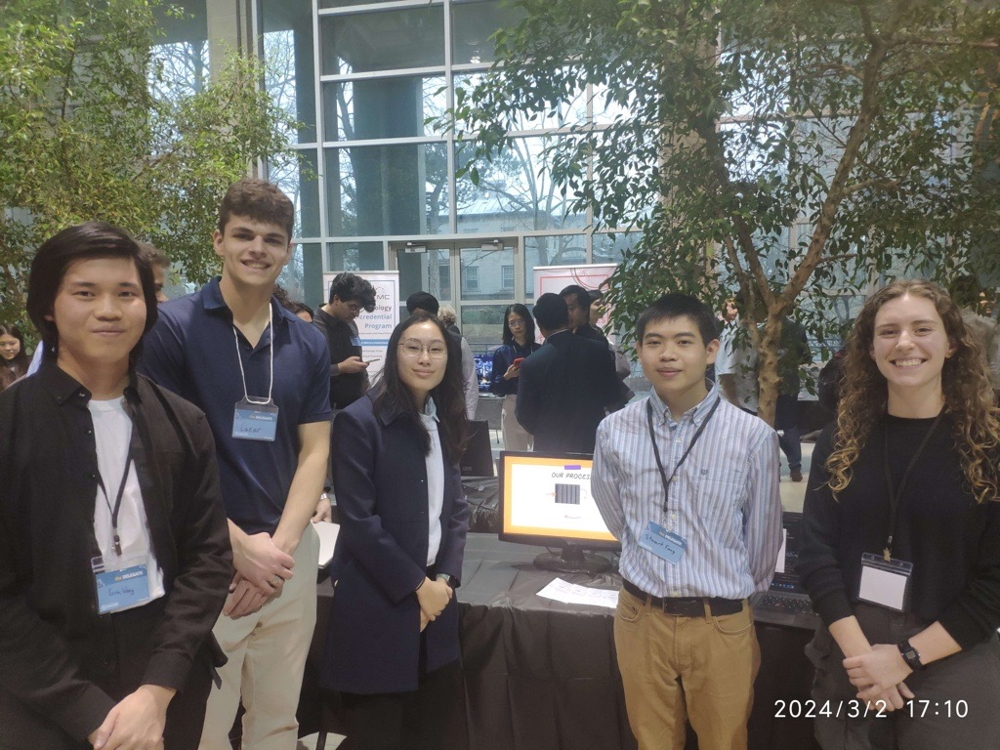